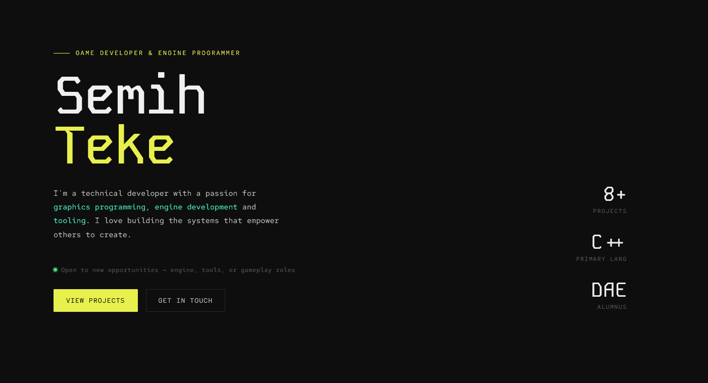
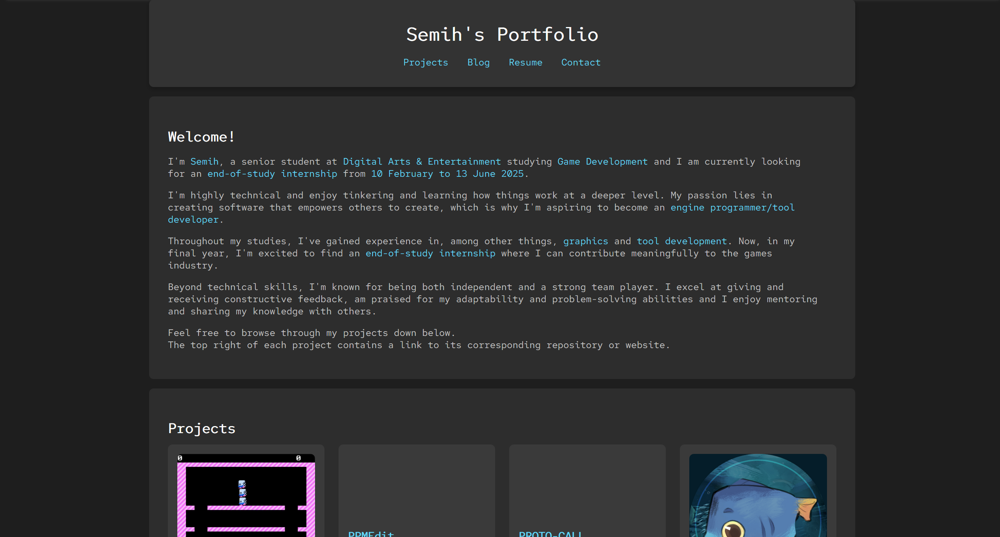

Ongoing Project

This is the site you're on right now. I built the first version around September of 2024 to have something to show at UNWRAP 2024, a game industry festival in Kortrijk where DAE runs a career fair connecting students with studios ranging from indie to AAA. It was my first time doing any web development, so I picked the simplest possible stack: plain HTML, CSS, and JavaScript. I wanted to build something I actually understood end to end rather than fighting with generic website builders.
The original version got the job done but the design was rough and the codebase had grown messy. In 2026 I did a full redesign from the ground up, which is what you're looking at now.
projects.js and posts.js. Adding a new project
or post means adding one object to an array and the renderer handles the rest.Hosting is more involved than I expected. Getting files to a server is the easy part, understanding how browsers cache those files and why a visitor might be looking at a version of your site from three deploys ago, is a different problem entirely. That's what led to the cache-busting setup in the CI pipeline.
I also had to learn about media optimization, which matters more on the web than anywhere else I'd worked before. Videos that worked fine locally would tank page load times. So I had to find solutions without degrading the quality of the media too much.
Another thing I struggled with was browser compatibility. Something that looks perfect in one browser renders completely differently in another and some HTML or CSS features have limited or inconsistent support depending on where you're running. What a headache.
More of a reminder than a new lesson : use variables. CSS custom properties for colours, spacing, and typography meant that changing the entire feel of the site was a matter of editing a handful of values in one place. Going in I knew this mattered, but I didn't appreciate just how much until I tried to make a global change without them.
